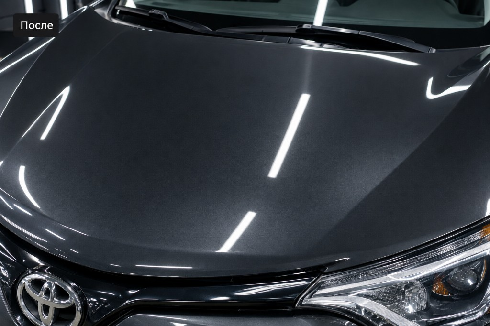

01
Автоэлектрик
Диагностика, сигнализации, проводка, стартеры и генераторы.
Новокузнецк · автокомплекс
Автоэлектрик и ремонт механической части на Фестивальной, 23. Сначала осмотр — затем точная смета.
Автоэлектрик и ремонт механической части — основные направления Premium Avto.
Диагностика, сигнализации, проводка, стартеры и генераторы.

Ходовая, ДВС, КПП, масла и топливные системы.

Ремонт автомобилей: осмотр, смета, работа и выдача.



Фотографии автокомплекса Premium Avto.
Смотрим автомобиль и фиксируем неисправности.
Согласуем объём работ и стоимость до старта.
Делаем электрику или механику по плану.
Проверяем результат и отдаём автомобиль.
Адрес и маршрут — в 2ГИС.
PREMIUM_AVTO
г. Новокузнецк, ул. Фестивальная, 23
Ежедневно · 10:00–20:00